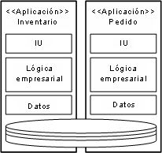
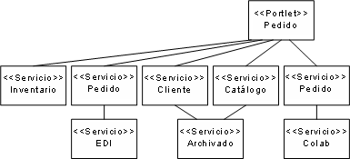
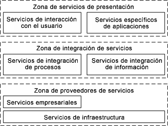

| Concepto: Cartera de servicios |
 |
|
| Elementos relacionados |
|---|
IntroducciónUna de las ventajas expuestas de la arquitectura orientada a servicios es la posibilidad de obtener del pensamiento en "silo" de la TI el desarrollo de aplicaciones como islas de funcionalidad. Tendemos a pensar hoy en día en las aplicaciones como una integración vertical de un conjunto de componentes creados para este propósito. A menudo se da el caso de que los proyectos de desarrollo se configuran alrededor del desarrollo, o del mantenimiento, de una aplicación y en algunos casos extremos los equipos de desarrollo son únicamente responsables de una sola aplicación. La siguiente imagen representa una estructura de aplicaciones empresariales común que muestra que realmente la única reutilización entre aplicaciones es a menudo que comparten una base de datos común.  Como el enfoque orientado a servicios nos llevaría a una vista más horizontal de las aplicaciones como integración de servicios, todos nuestros servicios son iguales en una cartera de funciones a partir de las cuales se pueden desarrollar las aplicaciones (que pueden ser consideradas ahora como aquellas piezas de las soluciones de TI que interactúan con los usuarios). A continuación se muestra cómo la aplicación Pedidos se puede desarrollar como un conjunto de portlets destinados al usuario para la integración en un servidor de portal, y que la lógica empresarial es suministrada por un conjunto de servicios que, a su vez, utilizan un conjunto de servicios de infraestructura.  Los servicios proporcionan componentes desplegados independientemente que se suministran en una granularidad que normalmente les permite estar completamente autocontenidos, lo que conduce a servicios que gestionan y protegen sus propios almacenes de datos en lugar de compartir almacenamientos de bases de datos. Esto parece contrastar con los movimientos realizados por algunas compañías durante años para introducir almacenamientos de datos comunes, o al menos modelos de datos comunes que compartan todas las aplicaciones. Muy al contrario, una arquitectura orientada a servicios tiende a conducir a los diseñadores al desarrollo de modelos de almacenamiento de datos no comunes pero de modelos de mensajes comunes para la fácil integración de los servicios en tecnologías de middleware. Vista de empresaTal como mencionamos antes, ambos proyectos y equipos de desarrollo tienen un ámbito limitado y también una visibilidad limitada en funciones, requisitos y objetivos más amplios de los servicios de TI y, especialmente, la empresa a los que los servicios dan soporte. Por lo tanto es importante que, durante el paso hacia soluciones orientadas a servicios y la vista horizontal de soluciones integradas, los arquitectos de la parte TI puedan visualizar la cartera de servicios que dan soporte a las soluciones empresariales necesarias para que la propia empresa funcione. Una ventaja para modelar servicios es que un modelo abstracto pueda elidir determinados detalles y, por lo tanto, presente la vista amplia de la cartera de servicios de manera escalable, por ejemplo, en la presencia de muchos servicios del modelo es posible presentar vistas de la cartera que da soporte a la toma de decisiones para el arquitecto de software y el diseñador. Obviamente, como transición de las organizaciones a la arquitectura orientada a servicios habrá un crecimiento en los servicios y, por lo tanto, la cartera no se iniciará como un gran modelo pero será posible capturar el estado de la transición desde el punto de vista de la disponibilidad y de los servicios planeados.El particionamiento de servicios también es vital en la organización del modelo y la categorización de servicios mientras se desarrolla la cartera. Categorización de serviciosDurante las primeras etapas de la identificación de servicios (consulte el apartado Actividad: análisis de activos existentes) es habitual que los servicios candidatos se capturen simplemente como lista de nombres, posiblemente estructurada como una lista jerárquica o almacenados en una hoja de cálculo. Dicha lista resulta útil cuando se trabaja en un entorno de taller y se obtienen servicios candidatos del material de origen. A medida que aumenta el número de servicios candidatos, una lista no estructurada puede volverse difícil de gestionar. Por lo tanto, tan pronto como se pueda debe identificarse un esquema de categorización de servicios para que los servicios candidatos puedan organizarse en grupos dentro de la jerarquía de categorías. Aunque una simple lista de nombres de servicio puede ser un eficaz punto de partida, podría ser importante capturar información adicional sobre cada servicio. Esta información puede subdividirse en dos tipos: información que de soporte a la identificación de servicios e información que de soporte a la especificación de servicios. La identificación de servicios se centra en la creación de una cartera de servicios que pueda asociarse con funciones empresariales, objetivos empresariales, activos como sistemas existentes y una indicación de si el servicio se considera candidato o se ha elegido para exposición. La plantilla de cartera de servicios de puede utilizar para documentar servicios en el nivel de detalle necesario en la cartera de servicios. Es importante poder categorizar los servicios de la cartera de diversas formas, pero lo más habitual es utilizar terminología que describa el objetivo, la propiedad u organización del servicio. Para dar soporte a la categorización o clasificación, cada partición de servicio tiene una propiedad de clasificación que se puede utilizar para indicar el tipo de clasificación, convirtiéndose el nombre de la partición en un valor de dicho esquema de clasificación. Por ejemplo, el siguiente diagrama (o alguna variante) ha sido desarrollado por diversas empresas para ayudar a visualizar los "tipos" de servicios de la cartera. Observe que esta categorización, aunque común, es simplemente una forma posible de segmentar la cartera de servicios. En este ejemplo cada partición se denomina con su propiedad de clasificación establecida en "zona". 
Para obtener más ejemplos de tipos de clasificación consulte el concepto Particionamiento de servicio. Repositorios de serviciosPor lo tanto, aparte de un modelo de cartera de servicios es importante que los diseñadores y desarrolladores tengan acceso a las especificaciones de servicio de forma detallada durante el diseño y la implementación. También es posible que varios servicios implementen la misma especificación y, de esta forma, un registro que permita consultas del tipo "todos los servicios que implementan la especificación Pedidos" permita a los desarrolladores componer soluciones a partir de servicios existentes, y a los desarrolladores de integración identificar qué servicios utilizar para satisfacer los requisitos empresariales o técnicos. Los repositorios de servicios también pueden utilizar los valores de clasificación introducidos con las particiones de servicio anteriores para prerrellenar los valores como metadatos que describen los servicios contenidos por el repositorio. Por ejemplo, una solución puede llamar a un servicio de envío, el registro puede identificar 3 servicios que ofrezcan envío, dos proporcionan intercambios de mensajes seguros pero uno sólo lo hace a través de Java Message Service (JMS) mientras los otros ofrecen SOAP a través de HTTP. Los requisitos empresariales sólo especifican que la información del cliente se mantendrá en privado y, por lo tanto, será necesario un intercambio de mensajes seguros, los estándares de TI recomiendan que JMS no se utilice en un servicio remoto y de ahí que hayamos reducido nuestras opciones. A continuación se presentan algunas implementaciones técnicas disponibles actualmente para registros de servicios.
|
© Copyright IBM Corp. 1987, 2006. Reservados todos los derechos. |